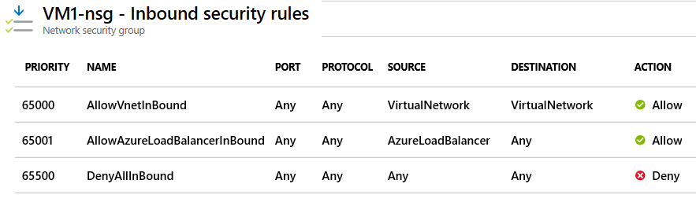
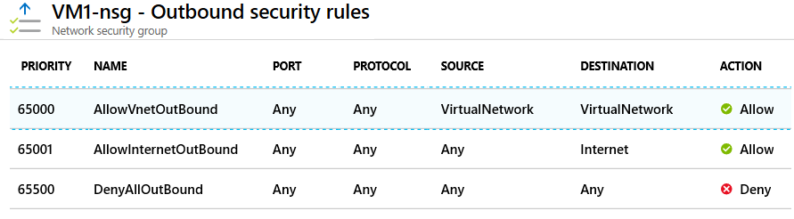

Security rules in network security groups enable you to filter network traffic. You can define rules to control the traffic flow in and out of virtual network subnets and network interfaces.
Things to know about security rules
Let's review the characteristics of security rules in network security groups.
-
Azure creates several default security rules within each network security group, including inbound traffic and outbound traffic. Examples of default rules include
DenyAllInboundtraffic andAllowInternetOutboundtraffic. -
Azure creates the default security rules in each network security group that you create.
-
You can add more security rules to a network security group by specifying conditions . Here's a list of the most common conditions.
Setting Value Source Any, IP Addresses, My IP address, Service Tag, or Application security group Source port ranges Specify the ports on which the rule allows or denies traffic Destination Any, IP Addresses, Service Tag, or Application security group Protocol Restrict the rule to the Transmission Control Protocol (TCP), User Datagram Protocol (UDP), or Internet Control Message Protocol (ICMP). The default is for the rule to apply to all protocols (Any). Action Allow or Deny Priority A value between 100 and 4,096 that's unique for all security rules within the NSG -
Each security rule is assigned a Priority value. All security rules for a network security group are processed in priority order. When a rule has a low Priority value, the rule has a higher priority or precedence in terms of order processing.
-
You can't remove the default security rules.
-
You can override a default security rule by creating another security rule that has a higher Priority setting for your network security group.
Inbound traffic rules
Azure defines three default inbound security rules for your network security group. These rules deny all inbound traffic except traffic from your virtual network and Azure load balancers. The next image shows the default inbound security rules for a network security group in the Azure portal.

Outbound traffic rules
Azure defines three default outbound security rules for your network security group. These rules only allow outbound traffic to the internet and your virtual network. The next image shows the default outbound security rules for a network security group in the Azure portal.
